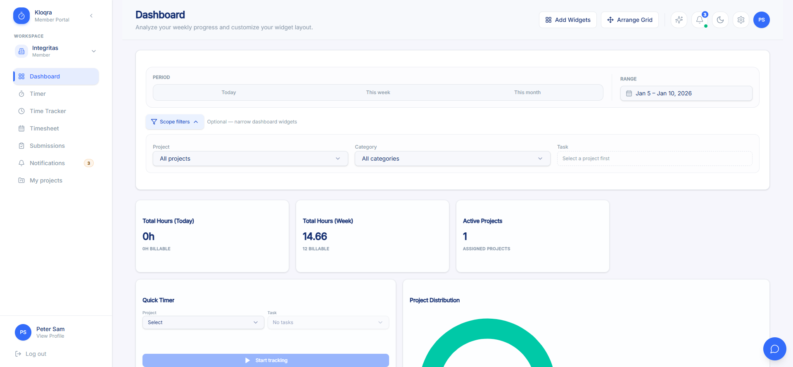
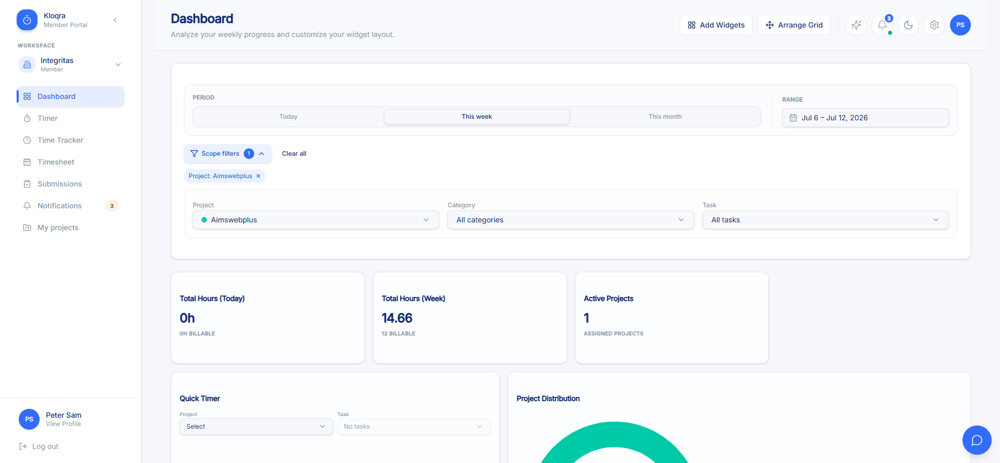
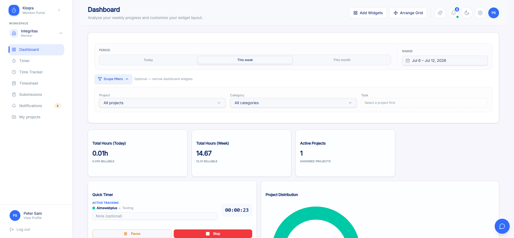
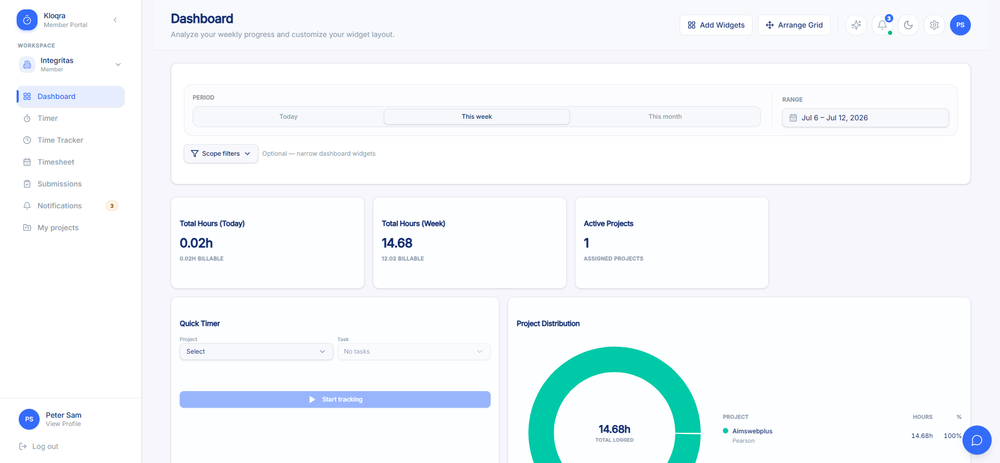
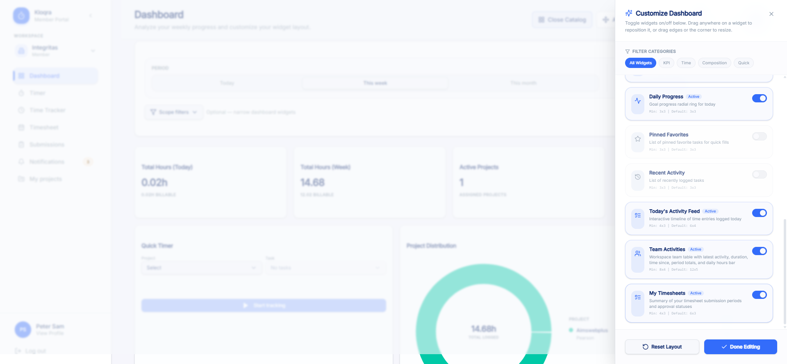
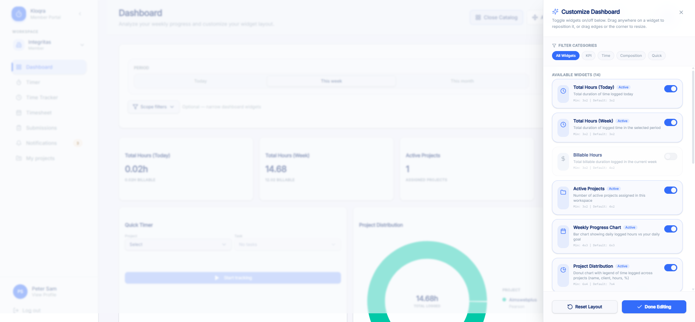
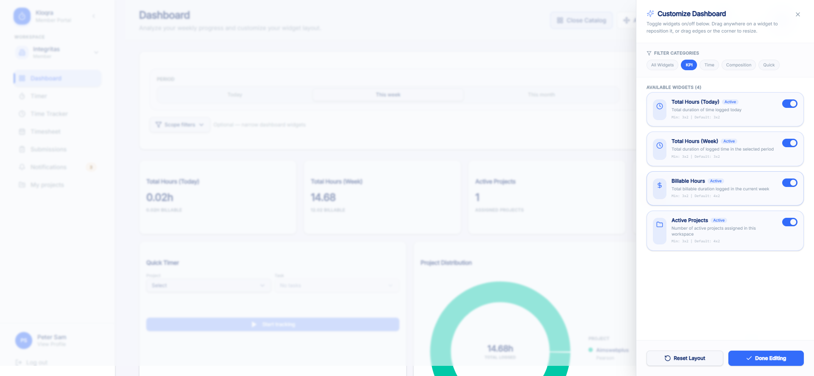
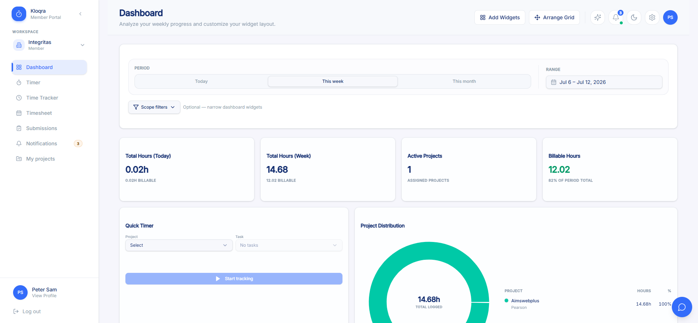
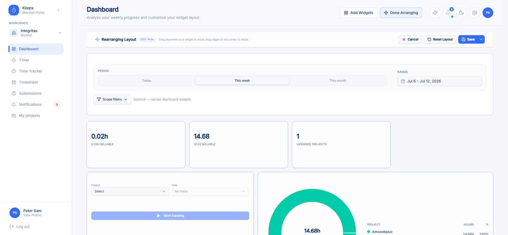

End-to-end QA workflow: acceptance criteria → test plan → exploratory testing → automation → self-healing execution → defect logging
This module covers the Member (Client-app) Dashboard at /dashboard: header/controls, Period & Range
filters, Scope filters, the 14-widget catalog (10 visible by default), layout customization (Add Widgets, Arrange
Grid, Reset Layout, per-workspace persistence), and cross-cutting loading/session/console-error behavior. Acceptance
criteria are sourced from docs/qa/user_stories/Dashboard_Member.md (30 ACs, derived from
architecture docs, docs/specs/reporting.md, live exploration, and GitHub
#563–#569).
That source doc itself already documents an extensive, pre-existing set of gaps versus the literal GitHub ticket
wording, each cited with a filed issue number
(#720,
#721,
#618,
#654,
#655,
#656,
#657,
#733) — this QA
pass re-verified every one of them live rather than assuming they were still accurate, and confirms all 8 still
reproduce exactly as documented (none silently fixed, none silently worse). The test plan
(specs_qa/dashboard-member.md) maps all 30 ACs to 66 scenarios (DM-001–DM-066).
| Artifact | Path |
|---|---|
| Acceptance criteria (30 ACs) | docs/qa/user_stories/Dashboard_Member.md |
| Test plan (66 scenarios / 7 feature areas) | specs_qa/dashboard-member.md |
| Exploratory results | specs_qa/dashboard-member-exploratory-results.md |
| Exploratory screenshots | specs_qa/exploratory/dashboard-member/ (18 screenshots) |
| Automation suite (pages + tests) | Test/dashboard-member/ (4 page objects, 8 spec files, 49 tests) |
| Healing log / run history | Test/dashboard-member/HEALING_LOG.md |
Executed via Playwright MCP (real browser, Chromium) against the live production Client app. Of the plan's 66
scenarios: 39 passed, 5 surfaced new discrepancies not previously documented,
7 reproduced a pre-confirmed, already-filed "known gap" exactly as documented (not new findings),
and 14 were not verified because the seeded test account (peter123@yopmail.com,
single workspace, one active project) cannot produce the required precondition — see
section 7 for the full list and reasons.
DM-008_period_today.png, DM-008_duplicate_total_hours_today_label.png.
from = min(selectedFrom, today), to = max(selectedTo, today) for the
/timelogs-backed endpoint feeding KPI cards, Project Distribution, Category Split, and the Weekly
Progress Chart. A genuinely empty period (fully future or fully past, excluding today) never shows the correct
"0h" / "No time logged in this period" empty state — it shows stale, wrong, non-zero data instead. Reproduced
reproducibly twice (future range Aug 15–20, 2026; past range Jan 5–10, 2026) with full request/response evidence.
Notably, the separately-implemented Team Activities widget (its own /workspaces/.../team-activities
endpoint) does not have this bug and correctly shows the empty state for the same picked ranges —
producing visibly contradictory data side-by-side on the same screen. The most significant new finding this
session. Confirmed via automation this session. Not yet filed as a ticket. Screenshots:
DM-011_BUG_stale_timelogs_future_range.png, DM-010-011_BUG_past_range_still_includes_today.png.
/timer/stop response body), but "Today's Activity Feed" and the "Total Hours (Today)" KPI card remain
stale for 6+ seconds after Stop and only update after a full manual page reload. Distinct from the already-filed
Note-dialog-timing gap (#656).
Confirmed via automation this session. Not yet filed as a ticket. Screenshot:
DM-031_BUG_stale_after_stop_confirmed_on_reload.png.
DM-017 (KPI stats vs. ticket #563 — #720 / #721), DM-020 (chart vs. ticket #564 — not yet filed), DM-032 (Quick Timer labels — #654), DM-040 (Team Activities bar vs. ticket #565 — #618), DM-046 (filter "tabs" vs. pills — cosmetic, no ticket), DM-048 (no "Inactive" badge — #657), DM-060 (Arrange Grid toolbar vs. ticket #569 — #733). Every one of these was actually driven live this session and matches the source doc's prior description precisely — none softened, none worse than documented, none turned out to already be fixed.
specs_qa/exploratory/dashboard-member/)








Standalone Playwright suite at Test/dashboard-member/ (Page Object Model). 4 page objects, 8
spec files, 49 automated tests total, built directly from the test plan and the real selectors/copy
confirmed live in Step 3.
pages/login.page.ts
pages/dashboard.page.ts
pages/arrange-grid.page.ts
pages/widget-catalog.page.ts
| Spec file | Tests | Covers | ACs |
|---|---|---|---|
tests/dashboard-access.spec.ts |
6 | Sign-in lands directly on /dashboard, direct navigation with no redirect, personal widgets show
no admin/billing aggregates, Team Activities stays privacy-safe despite being workspace-wide, header controls all
present, notifications badge matches sidebar nav |
AC-1, AC-2, AC-3, AC-21, AC-4, AC-5 |
tests/period-range-filters.spec.ts |
7 | Default "This week" + matching Range span, "This month" relabels the Week KPI card, custom range deselects Period presets, Scope filters collapsed by default with helper text, exactly Project/Category/Task shown (no Member filter), selecting a project enables Task, "Clear all" resets all three | AC-6, AC-7, AC-8, AC-10, AC-11, AC-12, AC-13 |
tests/kpi-and-widgets.spec.ts |
16 | KPI cards (Today/Week/Active Projects), known gap #720/#721 (decimal hours), Weekly Progress Chart bars/legend, month X-axis relabeling, known gap (no prev/next arrows), Project Distribution donut + legend, single-project full circle, cosmetic dot-vs-bar (no gap), Category Split donut, Daily Progress ring, Today's Activity Feed, Team Activities table + columns, zero-activity row state, Team Activities privacy check, hidden widgets absent by default, "My Timesheets" empty state | AC-14, AC-15, AC-16, AC-17, AC-19, AC-20, AC-21, AC-22 |
tests/quick-timer.spec.ts |
3 | Project/Task selector + Start-tracking gating, Task enabled after project selection (Start stays gated), starting/stopping a real timer and matching the documented Quick Timer gaps (#654/#655/#656) | AC-18 |
tests/widget-customization.spec.ts |
7 | "Add Widgets" opens "Customize Dashboard" as an overlay, panel lists "Available Widgets (14)" with Active badges, filter pills narrow the list (cosmetic naming only), known gap #657 (no "Inactive" badge), toggling a hidden widget on/off + Reset Layout restores defaults, toggle survives reload without "Done Editing", "Done Editing" closes the panel with no extra save | AC-23, AC-24, AC-25 |
tests/arrange-grid.spec.ts |
5 | Arrange Grid activates edit mode with the "Rearranging Layout" banner, known gap #733 (toolbar buttons), a real drag moves a widget and Cancel discards it, "Save layout" persists a real drag across reload, Reset Layout (in Arrange mode) does not revert a dragged widget — confirmed real defect (KAN-11) | AC-26 |
tests/cross-cutting.spec.ts |
2 | Switching period repeatedly never leaves a stale/incorrect KPI value, normal dashboard load/interaction produces no console errors | AC-28, AC-30 |
tests/defect-regressions.spec.ts |
3 | New regressions from exploratory testing: [DM-008] duplicate "Total Hours (Today)" heading, [DM-011/023/026] past/future date range silently includes today, [DM-031] widgets don't refresh within 5s of stopping a Quick Timer — all 3 intentionally left red as proof the defects exist | AC-7/AC-9/AC-16/AC-17, AC-18 |
Notably, real drag-and-drop automation (arrange-grid.spec.ts) succeeded where the Step 3 exploratory
pass's Playwright MCP drag simulation could not register with react-grid-layout's drag handlers — the
automation suite directly exercises and confirms drag/cancel/save behavior (DM-056/DM-057), and is what surfaced the
Reset-Layout defect (DM-059 / KAN-11) that exploratory testing could not reach.
This is the authoritative, stable result after three rounds of investigation, reproduced twice in a row with identical results before being treated as final.
Initial run: 2 expected / 38 skipped / 9 unexpected per the raw results.json stats. Every failure was
investigated individually rather than trusting the raw numbers. 7 of 9 failures were
Error: worker process exited unexpectedly (code=3221225794, signal=null) — a Windows access-violation
crash from host memory pressure (confirmed via wmic OS get FreePhysicalMemory, ~2.1–4GB free of 16GB at
various points), not real test or product failures. Re-running each in isolation once memory recovered produced
clean passes for all but two. The 38 "skipped" count was a cascade artifact of the crash aborting the run early, not
genuine precondition-based skips.
Full suite re-run after confirming the crashes were transient: 43 passed / 5 failed / 1 flaky. The 2 failures that weren't already-expected known-gap regressions were investigated rather than assumed to be new bugs:
dashboard-access.spec.ts — "Header notifications badge matches
sidebar nav badge." Root-caused via a live DOM dump: the sidebar renders two <a href="/notifications">
elements (collapsed icon-only + expanded full-row), only one visible at a time. On the visible (collapsed) one, the
badge digit is present as visible text but excluded from the computed accessible name, so a role/name locator could
never match it — a real DOM-structure quirk, not a timing issue. Fixed by scoping to the visible link and matching
on visible text instead of accessible name. Not filed as a bug — no visible/functional difference to a sighted
user.arrange-grid.spec.ts — "Reset Layout (in Arrange
mode) reverts a dragged widget back to the default position." Verified manually via Playwright MCP at the exact
same viewport as the test config (1366×768) before trusting the automated result, since an initial ad-hoc manual
check at a different viewport appeared to show Reset working — that discrepancy turned out to be the viewport
changing which grid column the drag landed in, not evidence of a false positive. This became KAN-11.
Next full-suite run after Round 2's fixes: 42 passed / 7 failed — 3 new failures in quick-timer.spec.ts,
none of which had failed before. Root-caused directly via a live account check: a timer had been running for ~20
minutes, left active by quick-timer.spec.ts's own "Starting and stopping a timer" test — if any of its
pre-stop assertions (documenting known, accepted Quick Timer gaps) had failed, execution would never reach the
stopQuickTimer() call later in that test, leaving the account non-idle for every subsequent Quick Timer
test in the same or a later run. This is a test-hygiene gap, not a product defect — fixed by adding
DashboardPage.ensureTimerStopped() to the beforeEach of all 8 spec files,
so every test starts from a guaranteed-idle state regardless of what a prior test left behind. Two additional stray
timers left running from manual/exploratory verification (not the automated suite) were also found and stopped
during this investigation.
Clean, stable, reproduced twice: 44 passed / 4 failed (all expected) / 1 flaky (passed on retry, no action
needed). The flaky test — arrange-grid.spec.ts "Arrange Grid activates edit mode with the
Rearranging Layout banner" — failed once and passed on Playwright's built-in retry; not pursued further since it's a
single-occurrence flake with no repeated pattern (unlike the crash/cascade issues above, which were investigated
precisely because they did repeat).
arrange-grid.spec.ts — Reset Layout does not revert a dragged widget to its default
position — NEW, not previously documented
After dragging a widget and clicking "Reset Layout" (in Arrange mode), the widget stays at (or near) its dragged position instead of reverting. Reproduced consistently across independent automated runs with identical wrong values, cross-checked manually at the correct viewport. Filed as KAN-11 (Major/Medium), screenshot evidence attached to the ticket.
defect-regressions.spec.ts — [DEFECT][DM-008] Total Hours (Today) heading appears twice
when Period = Today
First surfaced in Step 3 exploratory testing, now confirmed via automation. Not yet filed as a ticket.
defect-regressions.spec.ts — [DEFECT][DM-011/023/026] past/future date range with no data
silently includes today
First surfaced in Step 3, now confirmed via automation with request/response evidence. Not yet filed as a ticket.
defect-regressions.spec.ts — [DEFECT][DM-031] dashboard widgets don't refresh within 5s of
stopping a Quick Timer
First surfaced in Step 3, now confirmed via automation. Not yet filed as a ticket.
| Ticket / Reference | Summary | Severity / Priority | Status | Origin |
|---|---|---|---|---|
| KAN-11 | Dashboard Arrange Grid: "Reset Layout" does not revert a dragged widget to its default position | Major / Medium | Backlog (newly filed this session) | Discovered during automated execution (Round 2), cross-verified manually at the correct viewport, reproduced 3× across independent runs. Screenshot evidence attached to the ticket. |
| DM-008 (not yet filed) | Duplicate "Total Hours (Today)" KPI heading with conflicting values when Period = Today | Minor–Major (UI confusion, no data loss) | Confirmed, not yet filed | Found in Step 3 exploratory testing, confirmed via automation this session (defect-regressions.spec.ts). |
| DM-011 / DM-023 / DM-026 (not yet filed) | Custom date ranges not spanning "today" silently clamp to include today, hiding the correct empty state across KPI cards, Project Distribution, Category Split, and the Weekly Progress Chart | Major (data correctness) | Confirmed, not yet filed | Found in Step 3 exploratory testing (root-caused via network trace), confirmed via automation this session. |
| DM-031 (not yet filed) | Dashboard's own widgets (Today's Activity Feed, Total Hours Today KPI) don't auto-refresh within ~5s of stopping a Quick Timer; correct after manual reload | Minor (stale UI, no data loss) | Confirmed, not yet filed | Found in Step 3 exploratory testing, confirmed via automation this session. |
These 8 gaps live in docs/qa/user_stories/Dashboard_Member.md's own "Known gaps vs. ticket wording"
table (not Jira, since that's where they were originally filed and still live) and were re-verified live this
session — all still reproduce exactly as documented:
| Area | Gap | Filed as | Board status |
|---|---|---|---|
| KPI stats (AC-14) | No workspace-wide "Active Projects" count | #720 | Open |
| KPI stats (AC-14) | Hours shown as decimals, not HH:MM:SS | #721 | Marked Completed, re-verified failing this pass too |
| Team Activities (AC-21) | Vertical single-color daily sparkline, not a stacked horizontal per-project bar | #618 | Open |
| Quick Timer (AC-18) | Button labels / no animated ring / extra Pause control vs. ticket wording | #654 | Open |
| Quick Timer (AC-18) | No confirmation-dialog prompt text for a second active timer — shown as a toast instead | #655 | Open |
| Quick Timer (AC-18) | No post-Stop description dialog — description captured inline before Stop | #656 | Open |
| Add Widgets panel (AC-23) | Disabled widgets have no explicit "Inactive" label (opacity only) | #657 | Open |
| Arrange Grid toolbar (AC-26) | No standalone "Done" / "Done and Save as Default" buttons — combined into a "Save" dropdown | #733 | Open |
Two additional gaps noted in the source doc (Weekly Progress Chart vs. ticket #564; 8-hour idle alert not firing from the dashboard widget) are not yet filed anywhere as of the source doc's last QA pass — reproduced again this session (DM-020, DM-033) and still not filed, consistent with the source doc.
Every AC maps to at least one scenario; no orphan scenarios and no uncovered ACs in the plan. Status legend: Verified live-confirmed and/or automated, matches expected behavior (including cases that correctly reproduce an already-known, already-tracked gap — not a new defect); Defect confirmed real, wrong behavior against this AC; Not verified precondition unavailable this session.
| AC | Title | Scenario(s) | Automated? | Status |
|---|---|---|---|---|
| AC-1 | Member can access the Dashboard | DM-001 | Yes | Verified |
| AC-2 | Dashboard is the default landing page after login | DM-002 | Yes | Verified |
| AC-3 | Member sees only own data, no admin aggregates | DM-003, DM-004 | Yes | Verified |
| AC-4 | Header actions all present | DM-005 | Yes | Verified |
| AC-5 | Notifications badge reflects unread count | DM-006 | Yes | Verified (accessible-name test bug self-healed, no product defect) |
| AC-6 | Default period is "This week" | DM-007 | Yes | Verified |
| AC-7 | Switching period updates Range and period-aware widgets | DM-008, DM-009 | Yes | DM-008: defect (duplicate label, not yet filed) / DM-009: verified |
| AC-8 | Custom date range via the Range picker | DM-010 | Yes | Verified (selector/UI layer) |
| AC-9 | Empty period shows zero, not an error | DM-011 | Yes | Defect — date-range clamping bug, not yet filed |
| AC-10 | Scope filters optional and collapsed by default | DM-012 | Yes | Verified |
| AC-11 | Scope filters expose Project/Category/Task only | DM-013 | Yes | Verified |
| AC-12 | Selecting a project enables the Task filter | DM-014 | Yes | Verified |
| AC-13 | Clearing scope filters resets all three | DM-015 | Yes | Verified |
| AC-14 | KPI stat cards | DM-016, DM-017 | Yes | Verified — DM-017 confirms known gap #720/#721, not re-filed |
| AC-15 | Weekly Progress Chart | DM-018, DM-019, DM-020 | Yes | Verified — DM-020 confirms known gap (not yet filed), not re-filed |
| AC-16 | Project Distribution | DM-021, DM-022, DM-023, DM-024 | Yes | DM-023: defect (same root cause as AC-9) / others verified |
| AC-17 | Category Split | DM-025, DM-026 | Yes | DM-026: defect (same root cause as AC-9) / DM-025 verified |
| AC-18 | Quick Timer | DM-027–DM-033 | Partial | DM-027–029, 032 verified (DM-032 confirms known gap #654) / DM-031: defect, not yet filed / DM-030, DM-033 not verified |
| AC-19 | Daily Progress | DM-034 | Yes | Verified |
| AC-20 | Today's Activity Feed | DM-035, DM-036 | Yes | Verified |
| AC-21 | Team Activities (workspace-wide exception) | DM-037–DM-041 | Yes | Verified — DM-040 confirms known gap #618, not re-filed |
| AC-22 | Hidden-by-default widgets | DM-042, DM-043 | Yes | Verified |
| AC-23 | "Add Widgets" opens Customize Dashboard panel | DM-044–DM-048 | Yes | Verified — DM-046 cosmetic-only, DM-048 confirms known gap #657, not re-filed / DM-047 not verified |
| AC-24 | Toggling a widget updates the grid immediately | DM-049–DM-052 | Yes | Verified |
| AC-25 | "Reset Layout" and "Done Editing" (Add Widgets panel) | DM-053, DM-054 | Yes | Verified |
| AC-26 | "Arrange Grid" mode for drag/resize | DM-055–DM-060 | Yes | DM-059: confirmed defect (KAN-11) / DM-055–058 verified via automation (real drag), DM-060 confirms known gap #733, not re-filed |
| AC-27 | Layout persists per workspace, personal vs. default distinct | DM-061–DM-063 | Partial | DM-061 verified (via toggle-persistence proxy) / DM-062, DM-063 not verified |
| AC-28 | Loading state | DM-064 | Yes | Verified via automation (no stale/incorrect value observed across rapid period switches) |
| AC-29 | Realtime/session behavior (stale workspace header → 403) | DM-065 | No | Not verified — single-workspace account, auth-layer behavior |
| AC-30 | No console errors on normal load | DM-066 | Yes | Verified — 0 console errors from the app under test |
The Step 3 exploratory pass counted 14 scenarios as "not verified" (11 distinct scenario IDs, some
carrying a compound tooling-limitation note) because the single seeded Member account
(peter123@yopmail.com, one workspace "Integritas", one active project) cannot produce the required
precondition. Nothing here was silently skipped — each is listed with its reason below.
| Missing precondition | Scenarios blocked | Status after automation |
|---|---|---|
A second concurrent timer (409 TIMER_ALREADY_ACTIVE conflict) — needs a second device/tab starting a different task while one is active | DM-030 | Still not verified — automation could not manufacture true multi-device concurrency either |
An 8-hour idle/stale timer — StaleTimerDialog gap already documented in the source doc, would require leaving a real timer running for 8+ hours | DM-033 | Still not verified — not attempted in automation for the same environment reason |
| A widget-filter category with zero matching widgets in the current 14-widget registry (KPI=4, Time=1, Composition=2, Quick=7 — none currently yields 0) | DM-047 | Still not verified — no such category exists in the current registry to exercise |
| A multi-workspace Member account, to verify per-workspace layout isolation | DM-062, DM-063 | Still not verified — peter123 belongs to exactly one workspace ("Integritas") |
| A second Member/session, to independently verify "Save as default" changes what other members see | DM-058, DM-063 | Still not verified — only one seeded Member account available this session |
A stale X-Workspace-Id scenario (switch workspace on another device/tab) — auth/session-layer behavior, not dashboard-specific | DM-065 | Still not verified — single-workspace account, no second device |
Real drag/resize interaction (Playwright MCP's synthetic mouse events didn't register with react-grid-layout's drag handlers during exploratory testing) | DM-056, DM-057, DM-059, DM-064 | Resolved by automation — the Playwright automation suite drives real pointer events successfully; DM-056/057/064 now pass, and DM-059 is what surfaced the confirmed KAN-11 defect |
Net effect: of the original 14 "not verified" exploratory items, automation closed the gap on 4 (DM-056, DM-057, DM-059, DM-064) by driving real drag/resize and rapid period-switch interactions that the exploratory tooling could not reach — one of which (DM-059) surfaced KAN-11. The remaining 7 scenario IDs (DM-030, DM-033, DM-047, DM-058, DM-062, DM-063, DM-065) stay genuinely unverified because the environment cannot produce their precondition (second concurrent timer, 8-hour idle timer, a zero-match filter category, multi-workspace account, second Member account, stale cross-device workspace header) — not a test-authoring gap. Recommendation: re-run this suite once a multi-workspace account and a second Member account become available in the QA environment.